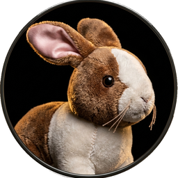

Cast of Characters
Click to hear their voice

Christmas Morning
Christmas Morning
For a long time he lived in the toy cupboard or on the nursery floor, and no one thought very much about him. He was naturally shy, and being only made of velveteen, some of the more expensive toys quite snubbed him. The mechanical toys were very superior, and looked down upon every one else; they were full of modern ideas, and pretended they were real. The model boat, who had lived through two seasons and lost most of his paint, caught the tone from them and never missed an opportunity of referring to his rigging in technical terms. The Rabbit could not claim to be a model of anything, for he didn't know that real rabbits existed; he thought they were all stuffed with sawdust like himself, and he understood that sawdust was quite out-of-date and should never be mentioned in modern circles. Even Timothy, the jointed wooden lion, who was made by the disabled soldiers, and should have had broader views, put on airs and pretended he was connected with Government. Between them all the poor little Rabbit was made to feel himself very insignificant and commonplace, and the only person who was kind to him at all was the Skin Horse.
The Skin Horse had lived longer in the nursery than any of the others. He was so old that his brown coat was bald in patches and showed the seams underneath, and most of the hairs in his tail had been pulled out to string bead necklaces. He was wise, for he had seen a long succession of mechanical toys arrive to boast and swagger, and by-and-by break their mainsprings and pass away, and he knew that they were only toys, and would never turn into anything else. For nursery magic is very strange and wonderful, and only those playthings that are old and wise and experienced like the Skin Horse understand all about it.
"What is REAL?" asked the Rabbit one day, when they were lying side by side near the nursery fender, before Nana came to tidy the room. "Does it mean having things that buzz inside you and a stick-out handle?"
"Real isn't how you are made," said the Skin Horse. "It's a thing that happens to you. When a child loves you for a long, long time, not just to play with, but REALLY loves you, then you become Real."
"Does it hurt?" asked the Rabbit.
"Sometimes," said the Skin Horse, for he was always truthful. "When you are Real you don't mind being hurt."
"Does it happen all at once, like being wound up," he asked, "or bit by bit?"
"It doesn't happen all at once," said the Skin Horse. "You become. It takes a long time. That's why it doesn't happen often to people who break easily, or have sharp edges, or who have to be carefully kept. Generally, by the time you are Real, most of your hair has been loved off, and your eyes drop out and you get loose in the joints and very shabby. But these things don't matter at all, because once you are Real you can't be ugly, except to people who don't understand."
"I suppose you are real?" said the Rabbit. And then he wished he had not said it, for he thought the Skin Horse might be sensitive. But the Skin Horse only smiled.
The Skin Horse Tells His Story
"The Boy's Uncle made me Real," he said. "That was a great many years ago; but once you are Real you can't become unreal again. It lasts for always."
The Rabbit sighed. He thought it would be a long time before this magic called Real happened to him. He longed to become Real, to know what it felt like; and yet the idea of growing shabby and losing his eyes and whiskers was rather sad. He wished that he could become it without these uncomfortable things happening to him.
There was a person called Nana who ruled the nursery. Sometimes she took no notice of the playthings lying about, and sometimes, for no reason whatever, she went swooping about like a great wind and hustled them away in cupboards. She called this "tidying up," and the playthings all hated it, especially the tin ones. The Rabbit didn't mind it so much, for wherever he was thrown he came down soft.
One evening, when the Boy was going to bed, he couldn't find the china dog that always slept with him. Nana was in a hurry, and it was too much trouble to hunt for china dogs at bedtime, so she simply looked about her, and seeing that the toy cupboard door stood open, she made a swoop.
"Here," she said, "take your old Bunny! He'll do to sleep with you!" And she dragged the Rabbit out by one ear, and put him into the Boy's arms.
That night, and for many nights after, the Velveteen Rabbit slept in the Boy's bed. At first he found it rather uncomfortable, for the Boy hugged him very tight, and sometimes he rolled over on him, and sometimes he pushed him so far under the pillow that the Rabbit could scarcely breathe. And he missed, too, those long moonlight hours in the nursery, when all the house was silent, and his talks with the Skin Horse. But very soon he grew to like it, for the Boy used to talk to him, and made nice tunnels for him under the bedclothes that he said were like the burrows the real rabbits lived in. And they had splendid games together, in whispers, when Nana had gone away to her supper and left the night-light burning on the mantelpiece. And when the Boy dropped off to sleep, the Rabbit would snuggle down close under his little warm chin and dream, with the Boy's hands clasped close round him all night long.
And so time went on, and the little Rabbit was very happy-so happy that he never noticed how his beautiful velveteen fur was getting shabbier and shabbier, and his tail becoming unsewn, and all the pink rubbed off his nose where the Boy had kissed him.
Spring came, and they had long days in the garden, for wherever the Boy went the Rabbit went too. He had rides in the wheelbarrow, and picnics on the grass, and lovely fairy huts built for him under the raspberry canes behind the flower border. And once, when the Boy was called away suddenly to go out to tea, the Rabbit was left out on the lawn until long after dusk, and Nana had to come and look for him with the candle because the Boy couldn't go to sleep unless he was there. He was wet through with the dew and quite earthy from diving into the burrows the Boy had made for him in the flower bed, and Nana grumbled as she rubbed him off with a corner of her apron.